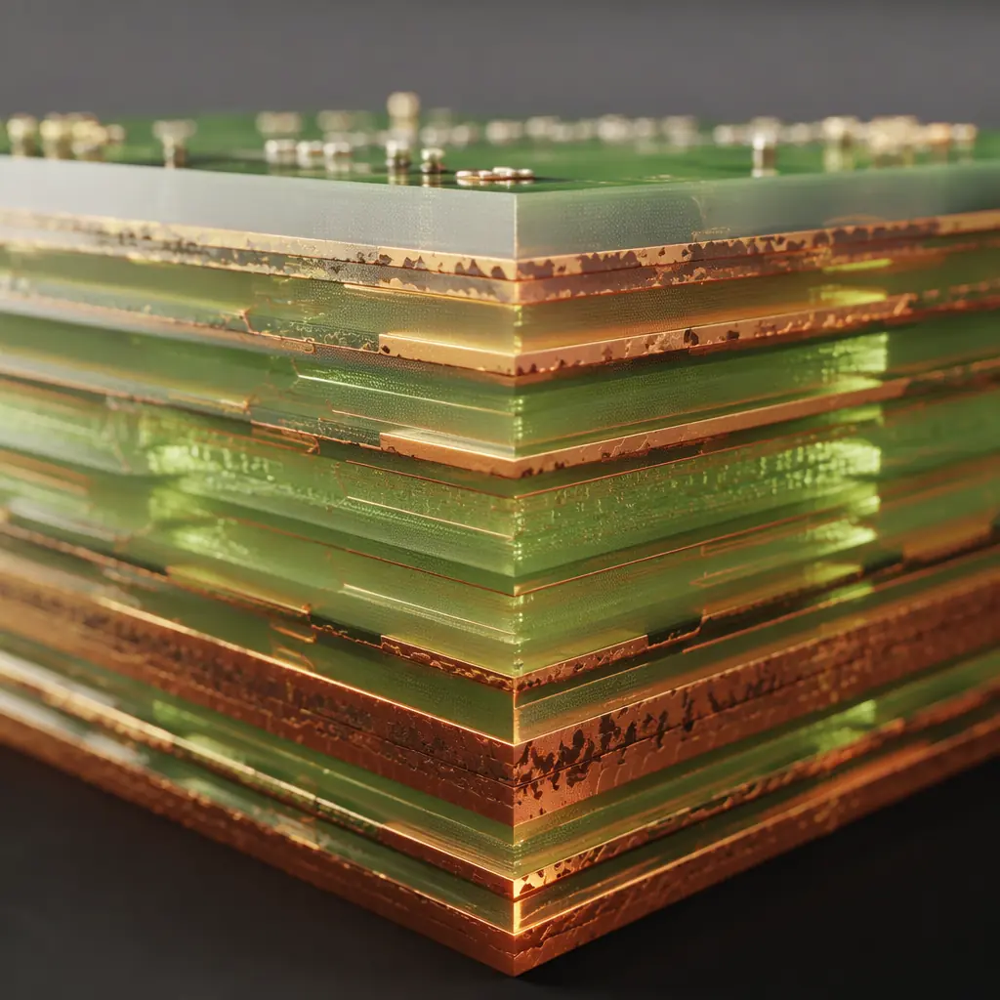
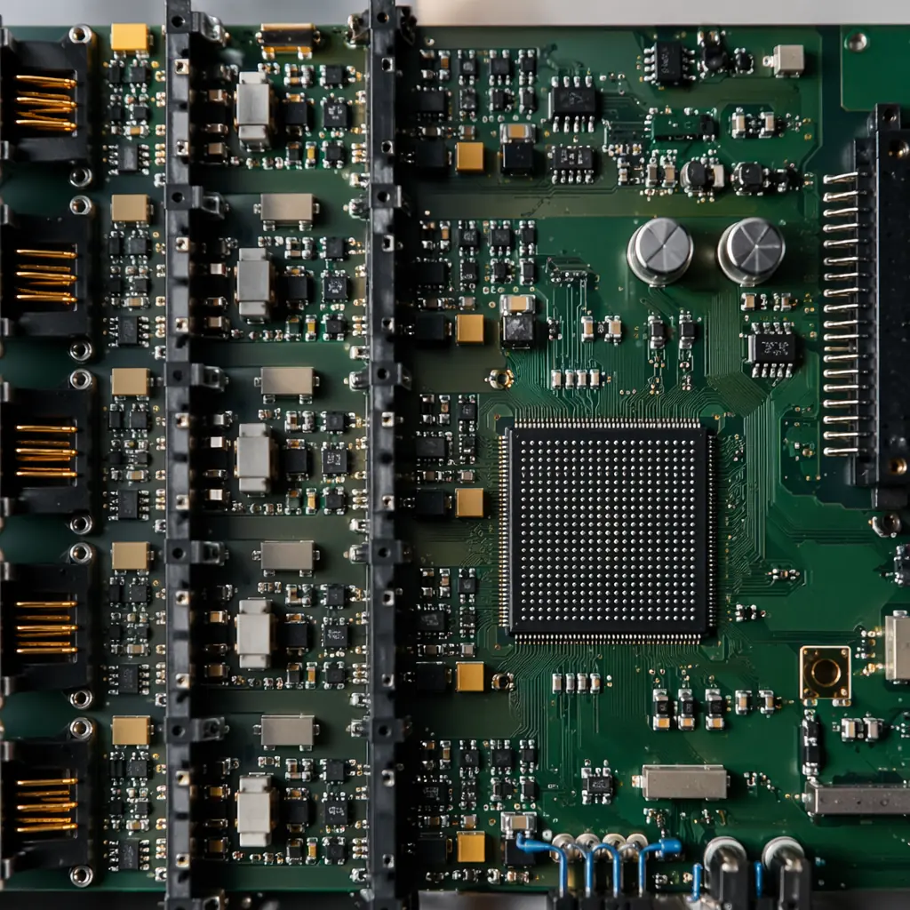
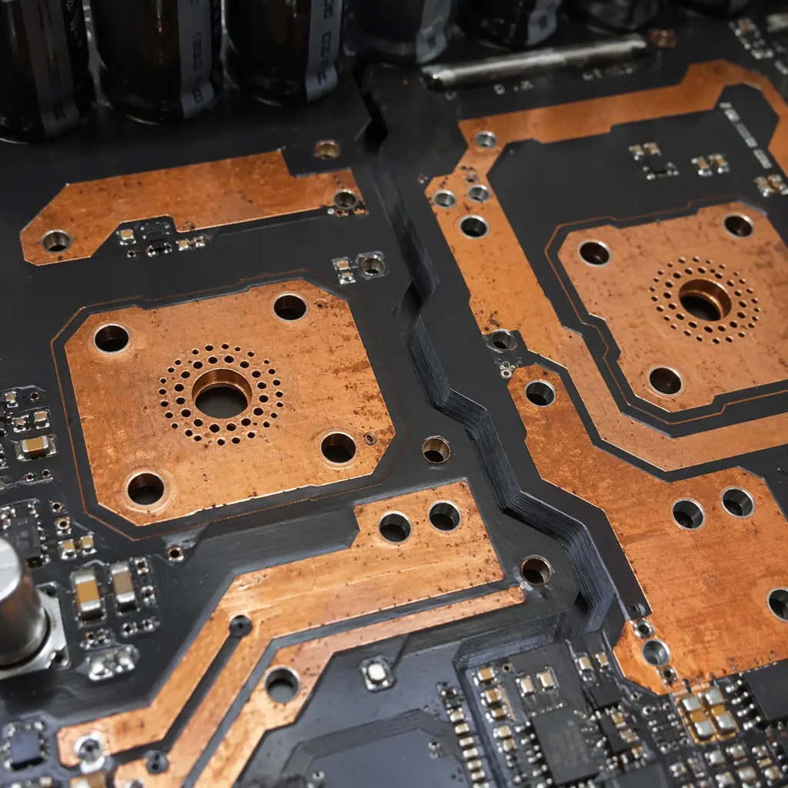

The industrial automation market is projected to reach $355 billion by 2028, and at the heart of every PLC rack, VFD cabinet, and servo drive enclosure sits a PCB engineered to standards that consumer electronics never encounter. Unlike smartphone or laptop boards designed for a 3-5 year replacement cycle, industrial control PCBs are specified for 10-15 year continuous operation in environments where ambient temperatures swing from -20°C on an unheated factory floor to +70°C inside a sealed control cabinet — and nobody is going to reboot the production line because a capacitor drifted out of tolerance.
This specification gap drives cost, material selection, and supplier qualification requirements that procurement teams new to industrial electronics often underestimate. At Huaxing PCBA, our Shenzhen facility produces industrial control PCBs with 6oz copper for VFD power stages, 32-layer mixed-signal stackups for advanced PLCs, and IPC Class 3 workmanship across our 8 SMT lines — serving 150+ customers in 30+ countries with a 99.2% on-time delivery rate.

Why Industrial Control PCBs Demand a Different Specification Class
The average consumer PCB operates at 0-40°C for 3-5 years with occasional use. An industrial control PCB operates at -40°C to +105°C ambient for 10-15 years with 24/7 duty cycles. The gap is not incremental — it requires a completely different engineering approach across material selection, design rules, and manufacturing process control:
| Parameter | Commercial PCB | Industrial Control PCB |
|---|---|---|
| Operating temperature | 0 to +40°C | -40 to +105°C (extended industrial) |
| Design lifetime | 3-5 years | 10-15 years minimum |
| Substrate Tg | FR-4 Tg130 | High-Tg FR-4 Tg170-180 minimum |
| Copper weight | 1oz standard | 2-6oz for power sections |
| Acceptance standard | IPC Class 1-2 | IPC Class 3 mandatory |
| Conformal coating | None | Acrylic or silicone (IPC-CC-830) for harsh environments |
| CTI requirement | PLC 3 (175-249V) | PLC 0-2 (≥400V for 480V industrial mains) |
| Solder joint voiding | <25% BGA (Class 2) | <15% BGA (Class 3), verified by X-Ray |
| Via reliability validation | None typically | IST testing to 260°C, <10% resistance change after 500 cycles |
The cost difference between a Class 2 consumer board and a Class 3 industrial board on the same layer count is typically 25-40% — driven by material premium, longer lamination cycles, tighter process controls, and 100% inspection requirements. Understanding precisely where that premium goes is how procurement teams make informed make-vs-buy decisions without over-specifying.
PLC System PCBs — Mixed-Signal Density with 15-Year Lifecycles
A modern modular PLC — think Siemens S7-1500 or Allen-Bradley ControlLogix class — is not one PCB but a backplane plus 4-8 I/O modules, each carrying a dedicated PCB with its own mixed-signal challenge. The CPU module combines a 32-bit processor running at 400-800MHz with DDR memory, Ethernet PHYs for PROFINET/EtherNet/IP, and isolated fieldbus transceivers — all on a single board that must fit a 35mm DIN rail form factor.
What drives PLC PCB complexity
- Isolation routing: Each I/O channel needs galvanic isolation between field-side (24V DC or 230V AC) and logic-side (3.3V/5V). This requires routing creepage slots between domains and specifying optocouplers or digital isolators with ≥2.5kV isolation rating per IEC 61131-2. On dense 16-channel modules, isolation routing consumes 40-60% of board area.
- Analog front-end precision: Analog input modules for 4-20mA sensors require 16-24 bit ADCs with dedicated analog ground planes, guard traces around sensitive inputs, and star-ground topology. A 1mm deviation in ground plane partitioning can introduce 50/60Hz mains hum that reduces effective resolution by 2-3 bits.
- Thermal management in sealed enclosures: PLC modules are installed in IP20 cabinets without forced air cooling. A CPU module dissipating 5-8W relies entirely on copper plane conduction and natural convection. Heavy copper inner layers (2oz on power planes) act as heat spreaders, reducing hot-spot temperatures by 10-15°C versus standard 1oz construction.

Production reality: We manufacture PLC CPU modules at 10-14 layers, 3/3mil trace/space, High-Tg FR-4 with controlled impedance on 6 layers for DDR memory interfaces. The stackup includes dedicated analog and digital ground planes with single-point connection, buried vias for high-density BGA escape routing, and ENIG finish for fine-pitch QFP coplanarity. Typical batch: 200-1,000 panels/month. First-pass yield: 98.7%.
VFD Power PCBs — High-Voltage Isolation and Thermal Management
Variable frequency drives are where industrial PCB engineering gets physical. A 15kW VFD converts 380-480V three-phase AC to DC (via a 6-pulse rectifier on the input board), smooths it through a DC link capacitor bank, then synthesizes variable-frequency AC through an IGBT inverter stage switching at 4-16kHz. The PCB inside this power path handles voltages that kill multimeters set to the wrong range.
The inverter board is typically a 4-6 layer design with the following critical requirements, each of which has material and layout implications that cascade through the entire design:
- Creepage and clearance at 480V AC: IEC 61800-5-1 requires 5.5mm creepage for 480V systems at pollution degree 2 (factory environment with non-conductive dust). This forces wide isolation slots between rectified DC bus (~680V DC) and logic domains. At 6oz copper, the etch undercut on wide isolation traces demands aggressive compensation in the Gerber data — our CAM engineering team applies 1.5× etch factor compensation at 6oz to maintain trace geometry.
- IGBT gate drive routing: Gate drive traces carry 2-4A peak current with sub-100ns rise times. At these di/dt rates, 10nH of trace inductance generates 1V of overshoot per amp of switched current. Gate drive loops are kept under 20mm total path length, routed as differential pairs on adjacent layers, with dedicated return paths directly beneath each trace.
- Thermal cycling endurance: VFDs cycle from cold start to full load within minutes, subjecting solder joints to ΔT of 40-60°C per cycle. After 10,000 thermal cycles (roughly 3 years of daily operation), solder joint fatigue becomes the dominant failure mode. We use High-Tg FR-4 (Tg180) with a CTE of 50-60 ppm/°C below Tg to minimize the CTE mismatch with copper (17 ppm/°C) — the closer the CTE match, the slower the via barrel fatigue progression.

Design rule that prevents field failures: At 480V AC, the minimum creepage distance between phases on the same PCB layer is 5.5mm. When this can't be achieved through routing alone, we mill a physical slot (1.5mm minimum width) through the PCB between high-voltage domains. This extends the creepage path around the slot edge, typically adding 3-4mm of effective distance. Slot routing is done pre-lamination on inner layers and post-lamination on outer layers — the sequence matters because inner-layer slots can shift during lamination press cycles.
Servo Drive PCBs — Precision Analog Meets High-Current Switching
Servo drives occupy a unique intersection in industrial PCB design: they combine the precision analog requirements of a laboratory instrument with the power switching demands of a motor drive — and both must coexist on the same board within a compact form factor. A modern AC servo drive delivering 2-5kW to a permanent magnet synchronous motor contains three distinct PCB domains separated by isolation barriers, each with its own contradictory design rules.
The current sensing section is the most precision-critical area. Phase current sensing typically uses shunt resistors (1-10mΩ) or Hall-effect sensors, with the voltage drop amplified by a precision instrumentation amplifier before ADC conversion. At 10mΩ and 20A RMS, the signal is 200mV — and ground bounce from the adjacent IGBT switching at 8kHz can inject 50-100mV of noise if the analog ground plane isn't perfectly isolated from the power return path. This is why in-circuit testing alone isn't sufficient — we validate current sensing accuracy under full-load switching with functional test (FCT) at rated torque.
The encoder interface carries 1-10MHz differential signals (RS-485 or EnDat/BiSS protocols) from the motor feedback device. These traces are routed as controlled-impedance differential pairs (typically 100Ω differential, ±5%) with length matching within 1mm. A 2mm length mismatch at 10MHz introduces ~10ps of skew — negligible for RS-485 but potentially problematic for BiSS-C at 10MHz clock rates.
| Servo Drive Section | Key PCB Requirement | Huaxing Capability |
|---|---|---|
| IGBT inverter stage | 4-6oz copper, 1.5kV isolation, slot routing | 6oz copper, 32-layer, controlled impedance ±5% |
| Current sensing | Kelvin-connected shunt, isolated analog ground | 3/3mil trace/space for precision routing |
| Encoder interface | 100Ω differential pairs, <1mm length match | Impedance control ±5% on all signal layers |
| MCU/DSP core | BGA escape routing, DDR memory interface | 0.3mm pitch BGA, laser vias (0.075mm) |
| Power supply | Multiple isolated rails (5V, 3.3V, ±15V, 24V) | Up to 6oz copper for power planes |
Material Selection for Industrial Environments
Industrial PCB material selection is driven by three parameters that are largely irrelevant in consumer electronics: Comparative Tracking Index (CTI), glass transition temperature (Tg), and Z-axis coefficient of thermal expansion (CTE). Getting any of these wrong doesn't cause immediate failure — it causes failure after 3-7 years of field operation, which is precisely when warranty claims become most expensive.
CTI is the least understood but arguably most critical parameter. It measures a substrate's resistance to surface tracking — the formation of conductive carbon paths across the PCB surface under high voltage and contamination. Standard FR-4 has a CTI of 175-225V (PLC 3), meaning it can track and form a short circuit under 480V AC with factory dust accumulation. For VFD and servo drive power sections operating at 480V, materials with CTI ≥ 400V (PLC 1-2) are mandatory. This typically means specifying a CTI-enhanced FR-4 variant such as Shengyi S1600 or ITEQ IT-180A — priced at roughly 1.8-2.5× standard FR-4 but eliminating the dominant failure mode in industrial power electronics.
Z-axis CTE determines plated through-hole reliability. When a PCB heats up, the laminate expands in Z at 50-60 ppm/°C (below Tg) while the copper barrel expands at 17 ppm/°C. This 3× CTE mismatch stretches the copper barrel on every thermal cycle. After enough cycles — typically 500-2,000 for standard FR-4, 3,000-5,000 for High-Tg materials — the copper work-hardens and cracks at the barrel center. For a VFD that thermal-cycles daily, standard FR-4 via barrels reach end-of-life in under 2 years. High-Tg materials with lower Z-axis CTE (35-45 ppm/°C below Tg) extend this to 8-12 years — matching the product's designed service life.
Certification Requirements for Industrial PCB Supply
Industrial automation OEMs audit PCB suppliers against standards that go well beyond a paper certificate. These are the certifications procurement teams should verify, and what each means at the production floor level:
IPC-A-610 Class 3
The workmanship standard for high-reliability electronics. Class 3 requires solder fillet dimensions within tighter tolerances, BGA voiding below 15% (verified by X-Ray on every board, not just sample inspection), and zero acceptable defects in the solder joint — including conditions that Class 2 allows as "process indicators." For a PLC running 24/7 in a production line, Class 3 is the minimum standard. Huaxing PCBA maintains Class 3 acceptance criteria across all 8 SMT lines with AOI and X-Ray verification on every panel.
UL 796 / UL 94 V-0
UL 796 certifies PCB base materials for electrical safety, and UL 94 V-0 ensures the substrate self-extinguishes within 10 seconds of flame removal. For industrial equipment connected to 480V mains inside metal enclosures, this is a code requirement — not optional. Verify the UL file number applies to the specific laminate and copper weight in your design. Our manufacturing operates under UL file E354321.
IATF 16949:2016
Originally automotive, now adopted by leading industrial automation suppliers because it mandates PFMEA, control plans, and SPC for every production step. A supplier with IATF 16949 has an externally audited quality management system — not a self-declared one. This matters when your industrial product has a 10-year warranty and field failures cost $50,000+ in service technician dispatch.
RoHS / REACH Compliance
EU industrial equipment under the RoHS Directive (2011/65/EU) and REACH Regulation (EC 1907/2006) requires full material disclosure and restriction of hazardous substances. For PCBs, this means lead-free surface finishes (ENIG, OSP, immersion silver/tin) and halogen-free laminate options. Our ENIG process operates lead-free with full lot traceability back to raw laminate and chemistry batch numbers.
How to Qualify Your PCB Supplier for Industrial Control Projects
Standard PCB supplier audit checklists won't surface the risks that matter for industrial control products. Here are five questions that separate shops with genuine industrial production capability from those that quote industrial specs but manufacture to consumer standards:
"What is your CTI test capability, and can you provide CTI data for the laminates you stock?"
Most PCB shops don't own a CTI tester (IEC 60112 apparatus, typically $15,000-25,000) and rely on laminate supplier datasheets. But CTI varies by resin content, glass style, and surface finish — a datasheet value doesn't represent the final board. Suppliers who can produce in-house CTI data per IEC 60112 understand industrial high-voltage requirements.
"Show me your IST coupon data for a 10-layer, 2oz copper design."
Interconnect Stress Testing (IST) per IPC-TM-650 2.6.26 cycles a test coupon from ambient to 260°C while monitoring resistance. The pass criterion is <10% resistance increase after 500 cycles. If a supplier can't produce IST data for your specific stackup and copper weight, their via reliability is assumed — not verified. At Huaxing, we run IST on every new stackup configuration before production release.
"How do you handle conformal coating thickness verification on production boards?"
IPC-CC-830 specifies coating thickness of 25-75μm for acrylic and 50-200μm for silicone. Proper verification requires a wet-film gauge during application and a dry-film measurement on test coupons after curing. If the answer is "visual inspection under UV light," thickness is being estimated — not measured. We run thickness verification coupons on every coating batch with documented measurements against your specification.
"What is your etch factor compensation at 4oz and 6oz copper — and can I see cross-section micrographs?"
Heavy copper etching produces trapezoidal trace cross-sections — the trace is narrower at the top than bottom. The etch factor (vertical etch depth / lateral undercut) determines how accurately the final trace width matches design intent. At 6oz, a poorly compensated process produces traces 15-20% narrower than designed. Suppliers who can't show you cross-section micrographs with measured trace widths at 6oz are compensating by guesswork.
"What's your minimum order quantity for a 12-layer High-Tg board with controlled impedance?"
Multi-layer controlled-impedance boards require impedance test coupons on every panel and TDR verification. The setup cost for a 12-layer controlled-impedance run is roughly $800-1,200 in tooling and test — amortized over volume. Suppliers quoting 5-panel minimums for this complexity are either eating the setup cost (unsustainable) or skipping TDR verification (dangerous). Realistic minimums are 50-100 panels for first article, 20+ for repeats. At Huaxing, we run transparent NRE breakdowns so you see exactly where your setup cost goes.
From Prototype to Production — The Industrial PCB Timeline
Industrial control product development cycles run 12-18 months from concept to production, and PCB prototyping needs to slot into this timeline without becoming the bottleneck. A typical industrial PCB development timeline with our facility:
| Phase | Timeline | Deliverable |
|---|---|---|
| DFM review | 4 hours | Stackup recommendation, impedance calculation, DFM report with 15+ check items |
| Prototype fabrication (2-8 layers) | 3 days (24h expedited) | 5-10 panels, Class 3, ENIG, electrical test |
| Prototype fabrication (10-32 layers) | 5-7 days | 5-10 panels, controlled impedance, TDR report, cross-section micrographs |
| Prototype assembly | 5 days | Full SMT + DIP, AOI + X-Ray, functional test per your test plan |
| Production ramp (200-2,000 units) | 7-10 days PCB + 7-10 days PCBA | Statistical process control data, FAI report, Certificate of Conformance |
Our turnkey PCBA service handles the full chain — from bare PCB fabrication through component procurement (we stock 50,000+ line items from Digi-Key, Mouser, and direct manufacturers), SMT assembly, conformal coating, and box-build integration. For industrial control customers, this eliminates the coordination overhead of managing separate PCB fab, component distributor, and assembly house.
At Huaxing PCBA, industrial control PCB production runs on processes validated for automotive-grade reliability — IATF 16949 certified, IPC Class 3 workmanship, and complete traceability from laminate lot to finished board. Our English-speaking engineering team reviews Gerber files within 4 hours and provides a free DFM analysis covering creepage distances, thermal management, and impedance control before you commit to production. Send your specs — we'll tell you honestly whether we're the right manufacturing partner for your industrial product.